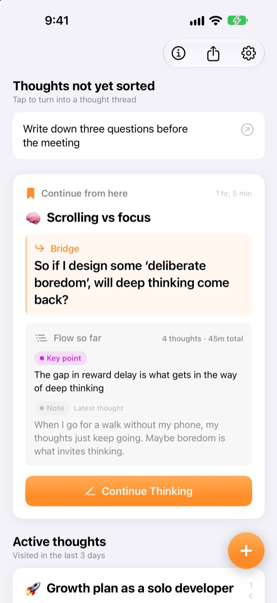
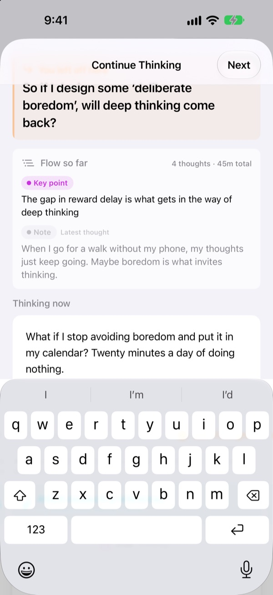
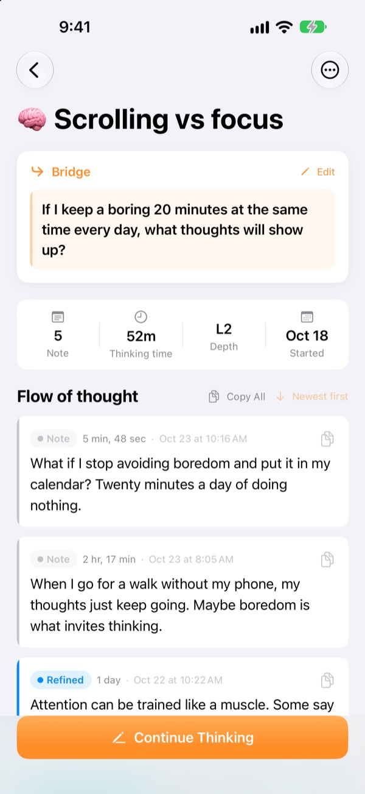
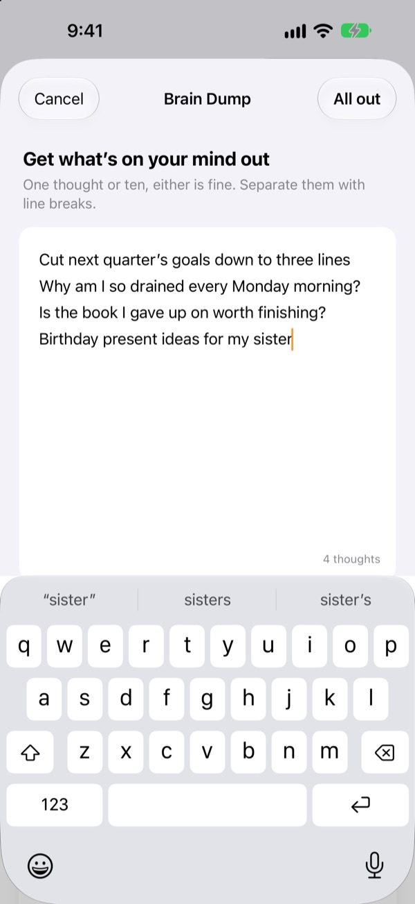

Yesterday’s half-finished thought,
picked up right where it stopped
When you stop thinking, leave one line to continue from. Next time you open the app, that line is waiting at the top.
Every feature is free. No account, everything stays on your device.

Try leaving a bridge
Add a thought, then leave the line you’ll pick up next time. It works in the same order as the app.
Wait, where was I going with this?
You reopen a note from last week and find a couple of conclusions, but not the question you were about to chase. So you start over from scratch. ThinkFlow has you leave that next question when you stop, so you start from it the moment you come back.
Your bridge is waiting at the top
End a session with one line: the question to pick up next. When you return, that line, your key points so far and your latest thought sit on one card, so there’s nothing to reconstruct.
Your bridge shows on a Home Screen widget too, and while you think, the time runs on the Lock Screen and in the Dynamic Island.

From rough note to key point
Move each thought up through four levels: note, refined, key point and summary. You can see at a glance how far a thought has matured.
What you looked up or asked about goes in as a reference, kept apart from your own thinking.

Empty your head first
Write down everything on your mind, one line each, then pick the one to work on now. It becomes a thread; the rest waits on the home screen until you tap it.
Thoughts you haven’t touched in over three days are gathered under Thoughts to revive.

Three steps to start
- 1
Dump your thoughts
One line each, then pick the one worth growing.
- 2
Keep thinking
Add each new idea as its own note so it’s easy to refine later.
- 3
Leave a bridge and close
Next time, you start from that line.
Refinement level
- Note
- Raw thought
- Refined
- Refined once
- Key point
- Key points only
- Summary
- Final summary
Tap the level badge next to a thought to change it. Key points and summaries come first on the card when you return.
Your bridge is waiting at the top
Do I have to write a bridge?
If you added anything, yes: the Continue Thinking screen only closes once you leave the next line. If you didn’t write anything, just close it. The trick is to stop while you still have something to say, not when you’re stuck.
What are Thoughts to revive?
Threads you haven’t opened in over three days are collected in their own section on the home screen, so a forgotten idea can pick up again from its bridge.
How do I report a bug or suggest a feature?
Use Send Feedback in the app’s settings, write to the address below, or open an issue at github.com/M1zz/ThinkFlow/issues. Anything is welcome.
Is it really all free?
Yes. Every feature is free, with no ads and no account. Support the Developer in Settings is entirely optional and doesn’t unlock anything.
Questions or feedback? Write to leeo@kakao.com.